第八章:模型评分和部署
在前一章中，我们学习了如何使用 DataRobot 生成的输出来理解模型，以及为什么模型会提供特定的预测。我们现在将学习如何使用模型对输入数据集进行评分，并创建要在预期应用中使用的预测。DataRobot 自动化了评分和生成行级解释所需的许多任务。
然而，创造预测并不是这些任务的终点。在大多数情况下，这些预测需要转化为行动，供人们或应用程序使用。这种从预测到行动的映射需要对业务的理解，因此需要一个人来解释结果(在大多数用例中)。在本章中，我们将讨论这是如何做到的。我们将讨论以下主要话题:
- 评分和预测方法
- 生成预测解释
- 分析预测和后处理
- 部署数据机器人模型
- 监控部署的模型
评分和预测方法
DataRobot 提供了多种方法来使用已经创建的模型对数据集进行评分。最简单的方法之一是通过 DataRobot 用户界面 ( UI )批量评分。为此，我们需要遵循以下步骤:
- 用要评分的数据集创建一个文件。鉴于我们使用的是公共数据集，我们将简单地使用相同的数据集来评分。在一个真实的项目中，您将可以访问一个您想要为其创建预测的新数据集。出于我们的目的，我们简单地创建了一个
imports-85-data.xlsx数据集文件的副本，并将其命名为imports-85-data-score.xlsx。 - Now, let's select the Predict tab and then the Test Predictions tab for the XGBoost (XGB) models, as shown in the following screenshot: 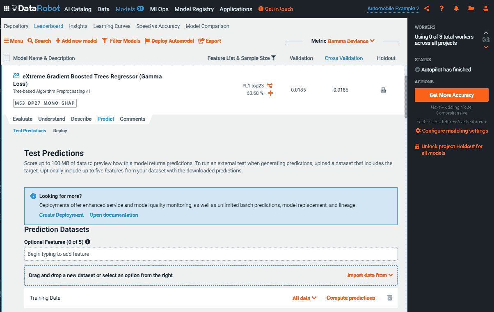
图 8.1–批量评分
在前面的截图中，您将看到您可以选择拖放一个新的数据集来将评分文件添加到模型中。
- Let's select our
imports-85-data-score.xlsxscoring file and drop it into the Drag and drop a new dataset box. Once you drop the file, it will get uploaded and you can see it in the interface, as shown in the following screenshot: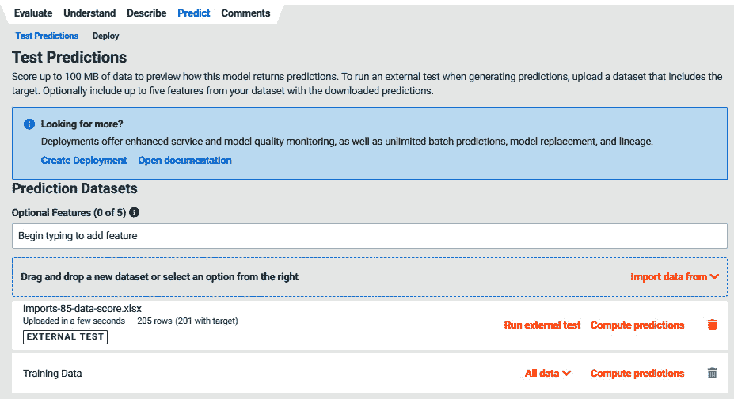图 8.2–计算预测
- 您现在可以点击可以在 Excel 中查看的
.csv文件，如下图所示:
图 8.3–下载的预测
对数据集进行评分的第二种方法是通过 DataRobot 批处理预测应用编程接口 ( API )，这将在下一节讨论。
生成预测解释
在本节中，我们将关注如何为评分数据集生成解释和预测。上传评分数据集后(如前所述)，您现在可以转到了解选项卡，然后选择预测解释选项卡，如以下截图所示:
图 8.4–预测解释
在前面的屏幕截图中，您可以看到它现在显示了上传的评分数据集。您现在可以点击数据集文件名旁边的图标来计算解释。一旦计算完成，您将看到下载图标。您可以使用下载图标来下载模型所做预测的解释。解释以一个可以用 Excel 打开的.csv文件的形式出现，如下图所示:
图 8.5-预测解释文件
在前面的截图中，我们看到该文件包含预测，以及对每个预测的解释。例如，如果我们看一下第make行，它解释了该汽车与基础值的 5.17%的差异。同样，您可以看到每个特征值的相对贡献。请注意，文件中的特征没有按照最重要的特征进行排序，并且给定行中最重要的特征与其他行中的不同。特征重要性将逐行变化。
现在我们有了预测和它们的解释，让我们看看如何分析它们，并确定如何使用它们来采取行动或作出决定。
分析预测和后处理
在我们开始部署模型之前，建议分析预测，看看它们是否有意义，错误中是否有一些模式，以及如何将预测转化为可操作的东西。在这些方面，传统的数据科学工具和方法没有多大帮助，您需要依靠其他学科的判断和方法来帮助制定接下来的步骤。为此，让我们从组合评分数据集文件和解释文件开始。这可以用结构化查询语言 ( SQL )、Python 或者 Excel 来完成。合并后的文件看起来类似于:
图 8.6–综合得分数据和预测
我们还创建了一个新的误差列，它只是从价格中减去预测。我们现在可以使用 Excel 创建一个数据透视表，并从多个角度查看结果。例如，让我们创建一个数据透视表，并通过用表示来查看误差值的平均值，如下面的屏幕截图所示:

图 8.7–符号化误差值的平均值
前面的截图显示值 -2 的误差要高得多。查看数据集，我们发现我们只有 -2 的三个数据点，因此模型表现不佳并不奇怪。这告诉我们，当代表的值为 -2 时，我们不能相信结果，我们应该尝试为该值获取更多数据。诸如此类的分析可以指出需要改进的地方和需要努力的地方。我们还意识到，由于这是一个平均误差，我们应该使用误差的绝对百分比值的平均值，以防止得出不正确的结论，如下图所示:
图 8.8–ABS PERC 误差值的平均值，用符号表示
现在，我们看到绝对百分比误差随着代表值的增加而减少。在这一点上，除了探索输出数据并从不同的角度查看它以了解您能发现什么之外，没有找到见解的硬性方法。通常，对错误进行排序并查看具有异常大的错误的行，然后看看是否可以确定为什么会这样是一个好主意。
现在，我们来看看构建数据科学模型的最重要的一个方面——了解要采取哪些措施。现在我们有了一个合理的模型来预测价格，一个问题出现了:我们应该如何处理这些信息？希望在项目开始时就能确定这个练习的目标是什么。让我们假设目标是通过查看模型的预测并提供所有参数如engine_size等来设定新车辆的价格。我们还可以想象，即使在设计阶段，当设计师试图确定不同参数(如bore或width)之间的权衡时，这样的模型也是有用的。这继续说，一个预测模型可以多次应用于在构建模型时没有考虑的用例。
然而，这需要我们理解业务问题的更广泛的背景。这是我们花时间讨论和理解第三章、理解和定义业务问题中的业务背景的主要原因。重温那一章可能会有所帮助，因为我们将使用在那里介绍的一些技术，比如因果建模。
为了确定我们如何使用价格预测，让我们回顾一下我们所知道的价格与其他参数的关系。在 第五章用 DataRobot 进行探索性数据分析，我们看了关联分析信息。使用互信息的关联强度由 DataRobot 生成。我们可以使用这些信息来绘制不同特征之间的网络图，如下图所示。为此，您可以为每个要素画一个圆，然后在关联强度高的要素之间创建线条:
图 8.9-特征间关联的网络图
在 第七章 、模型理解和解释中，我们看到了 SHapley 加法解释 ( SHAP )值中的项对于价格的特征重要性是特定于我们所选的模型的。下面可能是这个问题的因果图:
图 8.10-XGB 模型的因果图
图表的左侧代表 SHAP 值中最重要的特征。我们来想象一下，实际收取的价格和的预测有点出入。价格差异特征反映了某人可能做出的收取与预测不同的价格的决定。价格特性会影响的销售量，从而最终影响盈利能力。请注意，这仅反映了使用该模型帮助制定定价决策的一种可能方式。
另一方面，如果我们想象我们正试图帮助汽车设计团队设计出最佳的汽车配置，这也将是最有利可图的配置，那么我们可能会以不同的方式来看这个图表。这是因为汽车或发动机设计的不同选择也会影响汽车的成本。同样，我们从图 8.9 中知道，这些特征并不是独立的。改变孔特征将改变发动机尺寸和马力特征。因此，当我们考虑做出决策时，我们也必须考虑因果影响。这是一个非常简化的视图，你可以想象对于一个真实的问题，这些图会复杂得多。想象一下，商业领袖通过在头脑中考虑所有这些关系来做出这些决定。这是很多时候模型不被业务用户使用的原因之一。
在我们的示例问题中，图 8.10 所示的因果图相当简单。你可以想象现实世界中的问题，这个图会复杂得多。在这种情况下，很难评估模型的部署对生态系统的影响。这个包括用户和其他利益相关者。复杂的问题往往会产生许多意想不到的后果，尤其是当受影响的当事人是人的时候。
在这种情况下，如果潜在影响可能很大，建议在合成或模拟环境中测试新模型。测试和影响分析完成后，我们现在就可以部署我们的模型了。
部署数据机器人模型
DataRobot 使得部署您开发的模型变得非常容易。为部署准备一个模型，步骤如下:
- Let's unlock the project so that we can see the metrics for the holdout datasets, as shown in the following screenshot: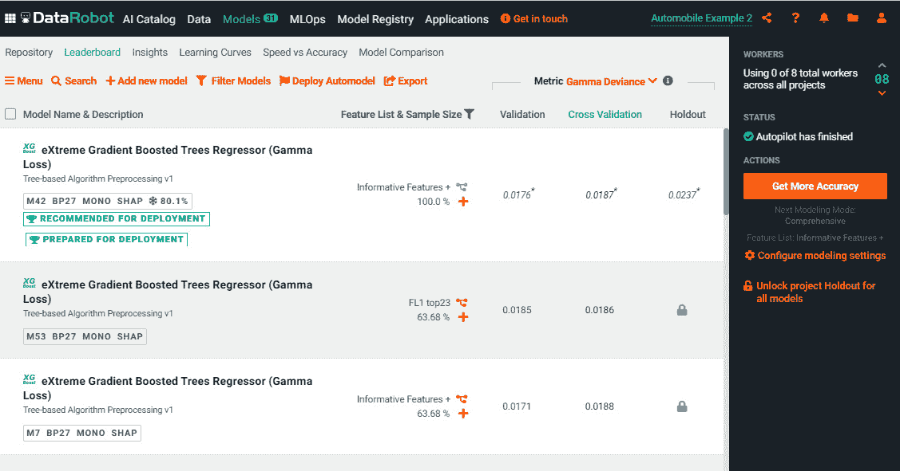
图 8.11–解锁数据机器人模型
在前面的截图中，您可以在界面的右侧看到解锁所有模型的项目维持选项。
- You should unlock the project only after you have selected the model that you are choosing for deployment. In our case, we have selected the XGB model that uses the FL1 top23 feature list. Clicking on this option brings up a dialog box, as shown in the following screenshot: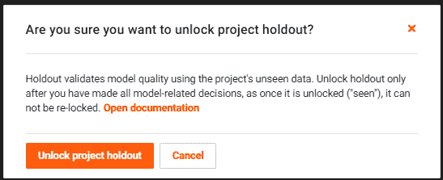
图 8.12–解锁项目维持
- Unlocking the project is an irreversible process. Let's unlock the project and see the holdout metrics, as shown in the following screenshot: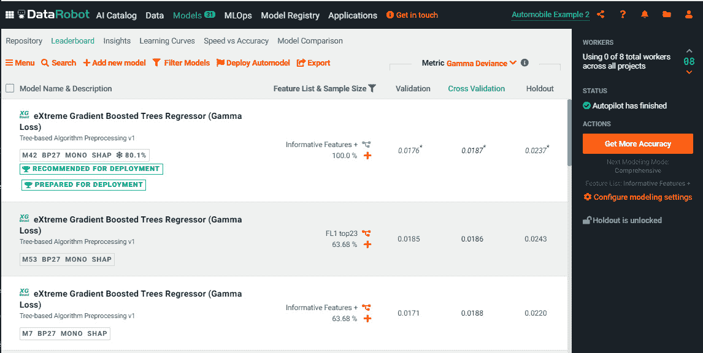
图 8.13–未锁定的项目视图
- Now that the project is unlocked, let's retrain the selected model with 100% of the data to improve this model's performance. For that, click on the orange + sign for the model, as shown in Figure 8.13. This will bring up a dialog box for changing the sample size, as shown in the following screenshot: 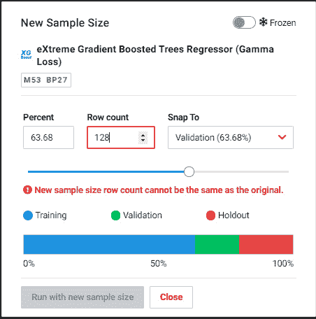
图 8.14–定义新的样本大小
- Drag the slider bar all the way to 100% to indicate that you want to train the model with 100% of the data, as shown in the following screenshot:

图 8.15–设置新的样本大小
- You can now click the Run with new sample size button. DataRobot will now retrain the XGB model with 100% of the data. For the XGB model, you can now click on the Predict tab and then the Deploy tab, as shown in the following screenshot: 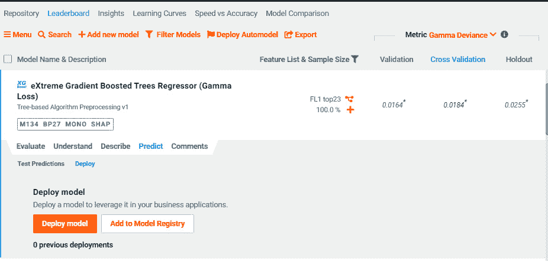
图 8.16–部署模型
- Next, click on the Deploy model button. This will bring up a new page, as shown in the following screenshot: 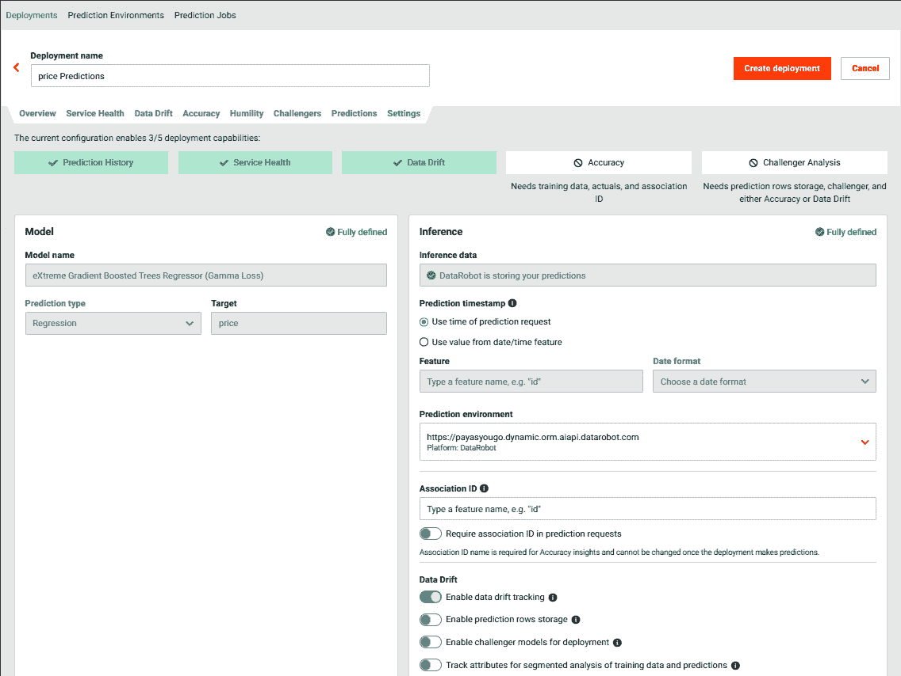
图 8.17–为模型创建部署
- 现在您可以为您部署的模型命名了。您还可以根据管理员的设置，选择托管已部署模型的预测环境。在数据漂移部分，您可以指定是否要跟踪数据漂移或启用挑战者模型。您还可以启用预测行的存储，这允许 DataRobot 分析一段时间内的性能。同样，您可以为模型性能的基于段的分析启用属性跟踪。
- 你现在可以点击
https://app2.datarobot.com。 - 您现在可以调用这个 API 来生成预测。您还可以通过单击不同的选项卡来查看关于您的部署的其他信息。如果你点击服务健康标签，你会看到这样一个页面:
图 8.19–部署的服务健康状况
前面的截图显示了价格预测模型的状态。它显示了已经完成的预测数量、预测的响应时间以及错误率。该屏幕截图没有显示任何值，因为我们刚刚部署了该模型。
我们现在准备开始监控这个部署的模型。
监控部署的模型
正如您现在已经猜到的那样，数据科学团队的工作并不会随着模型的部署而结束。我们现在必须监控这个模型，看看它的表现如何，它是否如预期的那样工作，以及我们是否需要干预和做出任何改变。我们将如下进行:
- To see how that works, let's click on the Predictions tab, as shown in the following screenshot: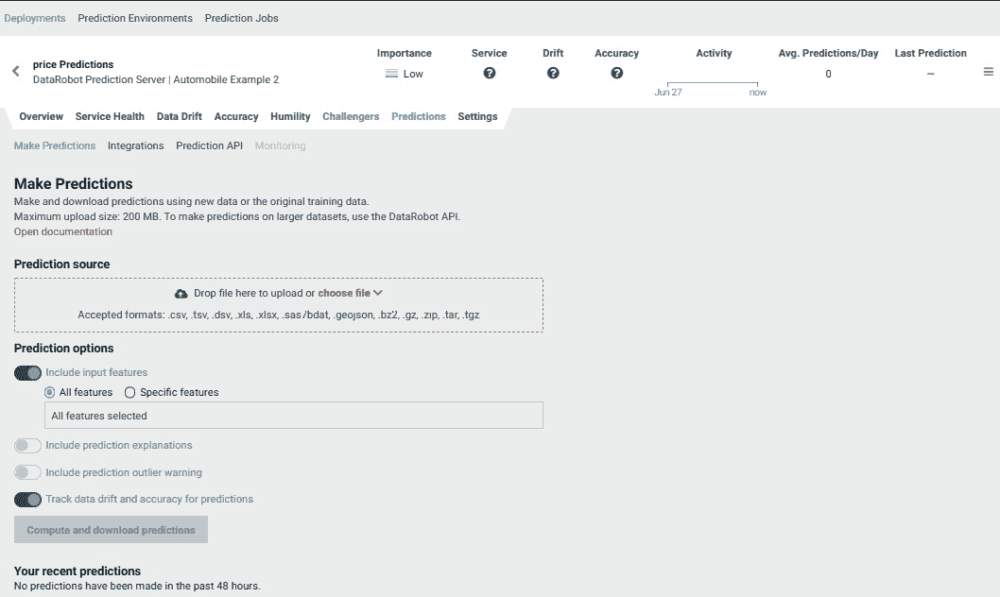
图 8.20–使用部署的模型进行预测
- We can now upload a dataset to be scored, by dragging and dropping a file (here, we will use the same file that we used before during model training) into the Prediction source box. We can now see other options becoming available, as shown in the following screenshot: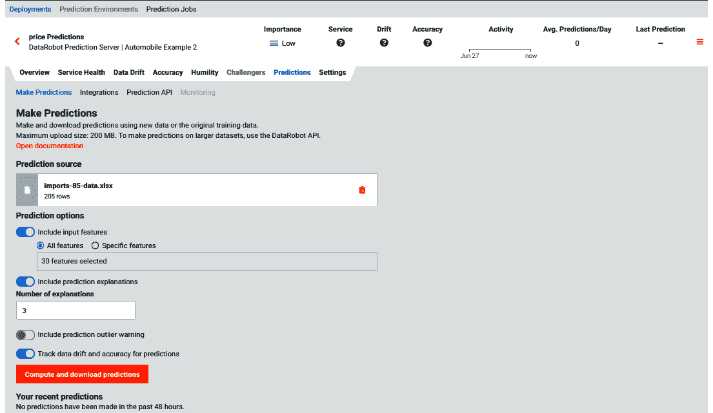
图 8.21–计算数据集的预测
- After selecting the options, we can click on the Compute and download predictions button. After DataRobot finishes the computations, we will see the output file becoming available, as shown in the following screenshot: 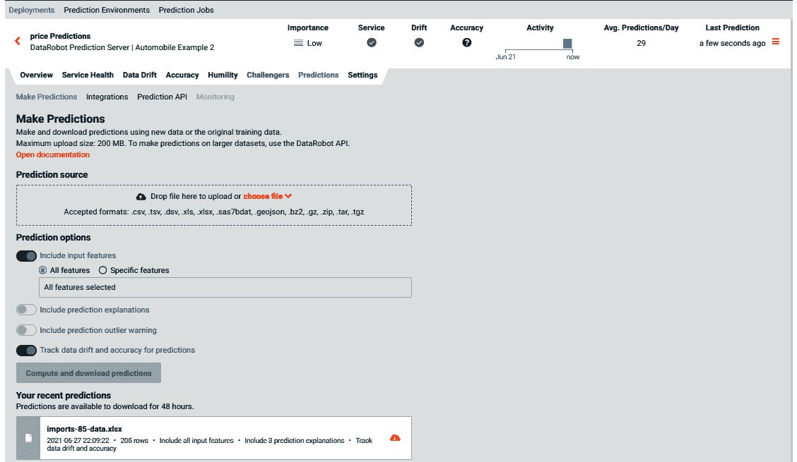
图 8.22–下载预测
现在可以下载并分析输出文件。因为我们对监控模型感兴趣，所以让我们单击服务健康选项卡，如下面的屏幕截图所示:
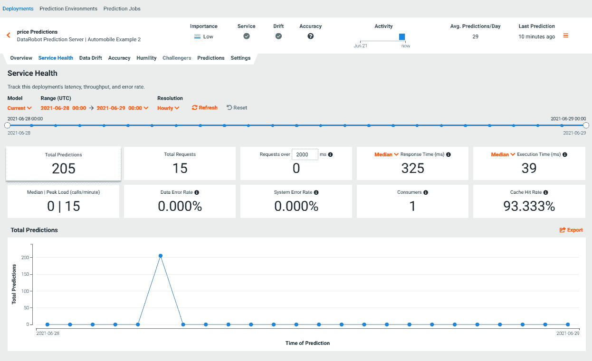图 8.23–模型的服务健康
我们现在可以看到，模型已经服务了 15 个请求，平均响应时间为 325 毫秒 ( 毫秒)，错误率为 0%。整体服务健康状况看起来不错。
- 我们现在可以通过点击数据漂移选项卡来查看模型的数据漂移，如下面的屏幕截图所示:
图 8.24–模型的数据漂移
在前面的截图中，在price的顶部。如果您向下滚动页面，您将看到其他图表，如下面的屏幕截图所示:
图 8.25–模型的数据漂移:附加信息
前面的截图显示了一段时间内的平均预测值。这将表明预测是稳定的还是随着时间的推移发生了变化。你必须依靠你对业务问题的理解来决定漂移量是否可以接受。DataRobot 还会通过显示红色、黄色或绿色状态来给你指示。红色状态表示存在需要解决的问题；同样，黄色表示您应该意识到潜在的问题，绿色表示一切正常。一般来说，问题可能是数据管道中的错误或业务环境的变化。商业环境的变化表明模型需要重新训练。
如果模型需要重新训练，或者如果您需要重新构建模型，您可以遵循我们在前面章节中概述的步骤。这就完成了如何使用 DataRobot 构建和部署模型的基本视图。
总结
在本章中，我们学习了如何在培训后使用模型。我们讨论了用于对数据集评分的方法以及用于分析结果输出的方法。我们还讨论了将预测转化为行动或决策的方法和注意事项。这是至关重要的一步，您必须通过这一步与您的业务利益相关者合作，以确保引入这一模型不会导致不可预见的问题。这也是处理变更管理任务的时间，例如将变更传达给受变更影响的人员，并确保用户在新流程中接受培训并知道如何使用新功能。
然后，我们讨论了如何使用 DataRobot 功能来快速部署模型，然后监控模型性能。人们很容易低估这种能力的重要性。模型部署和监控并不容易，许多组织花费了大量的时间和精力来尝试部署模型。希望我们已经展示了使用 DataRobot 可以多么容易地实现这一点。
我们现在已经完成了构建和部署模型所需的基本步骤，现在可以回顾 DataRobot 的一些高级概念和功能。现在，您已经准备好根据您的兴趣或您将要从事的项目类型深入研究高级主题。例如，如果你正在处理一个时间序列问题，那么你可以复习第九章 、预测和时间序列建模。